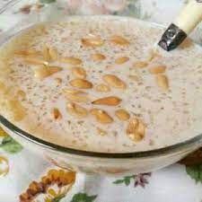

LightSoup

Ingredients
Please lets look closely at the following items used in the preparation of this special meal.
- Gari
- Sugar
- Groundnut
- Ice Cubes
- Salt
- Water
Preparation Steps
- Pour gari into bowl and add a lot of water .
- pour excess water from bowl.
- Add the sugar and salt Note: salt must be very small.
- Add groundnut to taste
- stir mixture and add extra water if required.